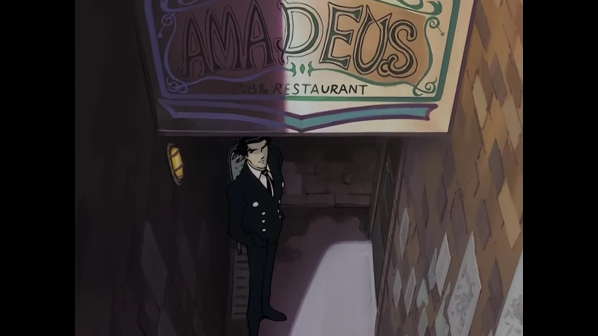

The Big O (THE ビッグオー Tha Biggu Ō) is an anime series directed by Kazuyoshi Katayama and animated by the Japanese animation studio Sunrise. The first season of the series premiered on October 13, 1999 on WOWOW with the episode "Roger the Negotiator" and concluded with "R.D." on January 19, 2000. Starting on April 2, 2001, The Big O aired two times in its edited form on the Cartoon Network: once during the afternoon Toonami block at 5:30 PM, and once at 12:30 AM during Toonami: Midnight Run; the 12:30 AM showing was the premiere and the more publicized 5:30 PM showing a rerun. In anticipation of the premiere of The Big O: Season Two, the first thirteen episodes were re-aired, completely uncut, on the Adult Swim block. Originally a 26-episode series, it was reduced to 13 episodes due to low ratings in Japan. However, positive international reception resulted in a second season co-produced by Cartoon Network, Sunrise, and Bandai Visual. The Big O: Season Two premiered on 2 January 2003 on SUN-TV with the episode "Roger the Wanderer" and concluded with "The Show Must Go On" on March 27, 2003. The American premiere took place on August 3, 2003.
Roger Smith, top negotiator of Paradigm City, is hired to oversee the retrieval of R. Dorothy Wayneright, the kidnapped daughter of the wealthy scientist Miguel Soldano.
Dorothy, distraught from having seen Dorothy-1 destroyed, suddenly disappears after the Big O returns to its underground base. Rogers ponders what Dorothy's connection with the giant Megadeus is.
There have been power outages occurring recently within the city. Casey Jenkins, a representative of the city's power management, hires Roger to go to the Electric City and negotiate with the locals the reactivation of the hydroelectric power plant.